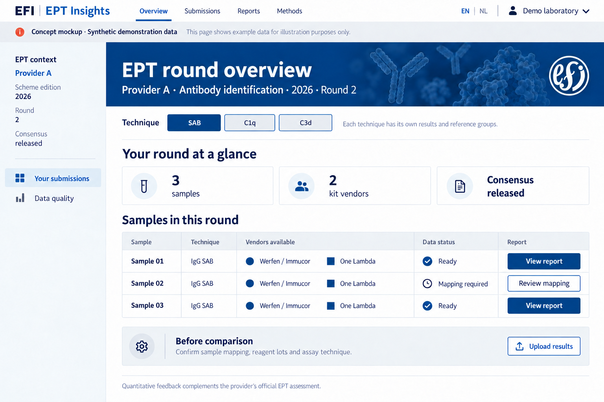
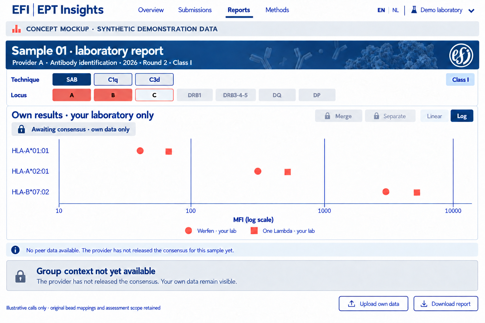
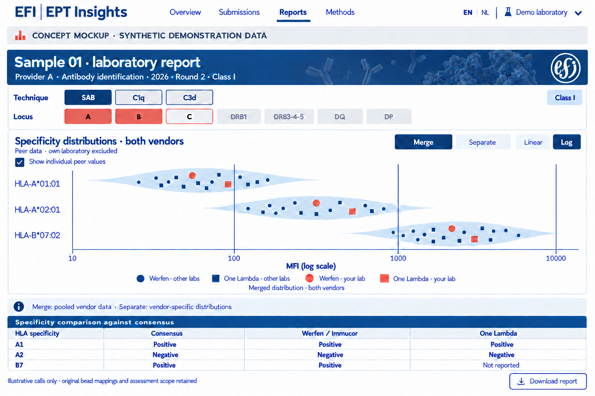

Version 1.0 · 15 October 2026 · Public design documentation
Purpose
A bilingual research prototype for supplementary analysis of HLA single antigen bead results within EPT distributions. Participants can inspect their own measurements and compare them with suitable references after provider release. This is a developing design, not an official EFI service, accreditation assessment or medical advice.
EPT context and identity
The structure is provider → scheme/year edition → round → sample → technique → lot-specific analytical target. Identical sample codes at different providers do not identify the same material. Providers, rounds and samples stay separate. Region is organisational metadata, not a peer-group definition. Provider enrolment is recorded only after confirmation.
Own data and release
A participant can upload, validate and inspect own data before consensus release. Group data remain restricted. The authorised provider uploads officially released consensus with scope and version; validation and processing unlock the matching group context for authorised participants. A date, filename or participant action cannot trigger this.
The first local version processes files solely in the browser. There is no central upload, account environment or production permission model yet. Local demonstration of consensus release is not real provider authorisation. Real collaboration requires private submission contexts and access enforcement.
Techniques and vendors
Conventional IgG SAB, C1q and C3d are parallel, separate techniques. Shared beadsets do not make measurements or consensus interchangeable. SAB in the interface means IgG SAB. Werfen/Immucor and Thermo Fisher/One Lambda have separate importer adapters; the first implementation starts with Werfen xPONENT CSV + EDS. MATCH IT! follows later. Unvalidated formats are explicitly rejected.
Laboratory report
Technique offers SAB/C1q/C3d. Locus offers A, B, C, DRB1, DRB3-4-5, DQ and DP. Both rows align; multiple loci can be selected. The chart axis shows bead composition as a PL String, never bead numbers as main labels. DQ/DP chains are paired only through confirmed mapping; ambiguous exports are not silently reconstructed.
Merge computes one violin from pooled eligible vendor measurements for the same target. Separate computes one violin per vendor. Context, technique, quantity and explicit lot selection stay fixed. A laboratory can contribute two vendor measurements while counting once as a unique lab. Show laboratory and measurement counts. Own values are excluded from the reference by default.
MFI axes always start on log10, with original MFI units as labels. Zero, negative, missing and invalid remain separate; no silent replacement with 1. Small cohorts do not get artificial violins. Peer points use circles for Werfen and squares for One Lambda, all blue. Own points use the same vendor shape, are larger and coral. Peer points contain no laboratory identity.
Input and output
Input comprises source exports, technique, lot metadata and confirmed mapping of local samples to the EPT context. EDS files support lot-specific bead annotations. Control beads are distinct from analytical targets. Source values remain unchanged; corrected and normalised measurements are different quantities. HAML can support interchange but does not replace provider/release metadata.
Outputs include import validation, own measurement tables, context-specific charts and reproducible JSON/CSV/SVG exports with source hash, method version, inclusions, exclusions and active filters. Official consensus assignments originate from provider consensus, never a substituted universal MFI cutoff.
Privacy and publication
This public site contains approved design documentation, style conventions and synthetic illustrations only. Private correspondence, source PDFs, patient fields, tokens and real participant data are not published. Removing names does not automatically make peer data public. GitHub Pages is the public documentation layer; confidential data require a separate private context.
Design images
The images are synthetic orientation views; implementation uses original logos and SVG components.



Public sources
- EFI EPT Committee
- EFI EPT providers
- HAML
- IHIW converters
- hlapro and public mock files
- PL String specification
Public source links do not establish collaboration or enrolment. EFIEFI style guide.
Separate dashboards by user role
The participating laboratory dashboard contains its own import, measurements, report and exports. Group context becomes visible only after release by its EPT provider. The separate provider dashboard contains the overview by provider, scheme/edition, round, sample and technique, with consensus validation and release. Providers and techniques remain separate.
In the current browser prototype, the dashboard selector switches between these routes. This is navigation within a simulation, not authentication or secure authorisation. A new laboratory import locks group context again.
Roles, sign-in and participant workflow
There are three demo roles: admin, provider and participant. Admin espierin sees the account overview and can inspect the other two dashboards. Provider provider_1 sees the consensus route. Participant participant_1 first chooses EPT schemes and vendors, then imports CSV and EDS, and sees analyses only after confirmation. Reporting remains linked to the enrolled provider and scheme edition. One Lambda participation can already be registered; its importer is not yet available.
My profile lets you add an optional email address and change your password. A password change requires the current password and repetition of the new password. No emails are sent and email recovery is not yet available. Signing out clears imported results and reference data from the session.
This is a local account simulation on GitHub Pages. The site contains salted PBKDF2-SHA256 verifiers with 210,000 iterations, with no readable initial passwords. Changed passwords, email and scheme enrolments are stored in localStorage under ept-demo-accounts-v1 and apply only to this browser and site origin. Login is not retained after refresh. Clearing local storage restores the original demo accounts. Even with hashes, browser code cannot enforce real authorisation; every publicly published file remains public. Production requires an authentication service, protected storage and server-side checks by role, provider and enrolment. Email verification and account recovery follow in that phase.
Logarithmic axis subdivisions
The MFI axis defaults to log10. Major ticks mark powers of ten. Each decade contains short axis ticks for multiples 2 through 9, positioned logarithmically. These subdivisions do not extend as gridlines into the chart. Linear mode has no logarithmic minor ticks. SVG export preserves the subdivisions.
MFI display
Display MFI values as rounded integers with no dot, comma or space as a thousands separator. Apply this to tables, axis labels and tooltips in both languages. Example: 8001.5 is displayed as 8002. Calculations, point positions and CSV/JSON data exports retain original precision; SVG export follows the visual integer display.
Demo releases are retained in this browser by provider, scheme, round, sample, class and technique. A matching participant import applies the release; withdrawal removes that local release. Other browsers do not yet share this status. No raw laboratory results are stored centrally.
Both demo classes and a fixed MFI axis
The public demo includes class I (four HLA beads) and class II (five HLA beads), each with its own CSV and EDS lot file. Admin and provider receive both demo classes after sign-in. A participant first confirms a public demo import; the other demo class is then added automatically. This applies only to the public demo. User-selected files do not automatically mix with demo data. Use buttons I and II to switch. Data, lot, loci, measurement section and consensus remain separate by class; signing out clears both imports.
All MFI charts use a fixed visible range from 1 through 10000 in both logarithmic and linear modes. The log axis has major ticks at 1, 10, 100, 1000 and 10000, with short logarithmic subdivisions on the axis only. Values outside the visible range receive dashed boundary markers and are counted in the chart explanation. Source data, calculations and numeric exports retain their original values. Fixing the axis does not change measurements.
Five additional browser checks in app/tests/classes.cjs cover default class II import, paired DQ/DP specificities, switching back to class I, both fixed axes, values below 1 and above 10000, export precision and clearing both classes on sign-out.